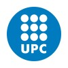
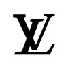
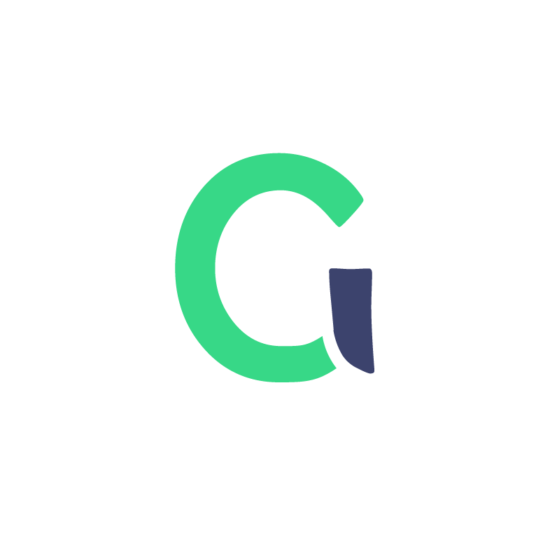
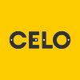
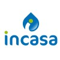
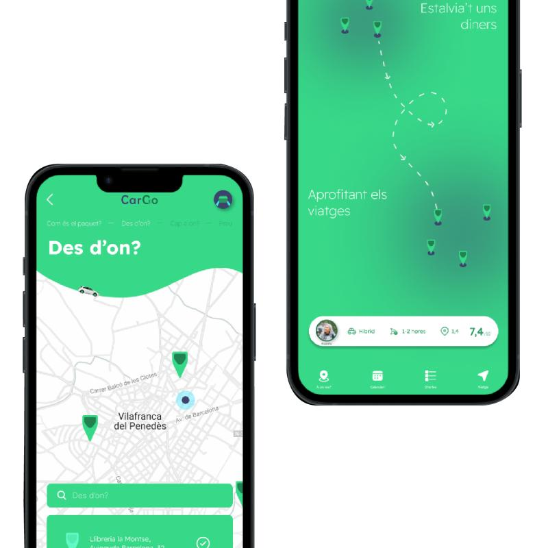
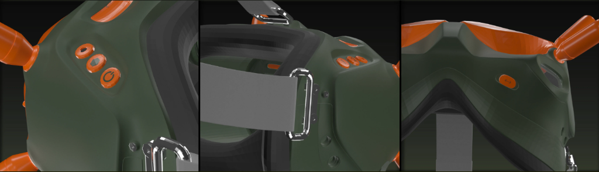
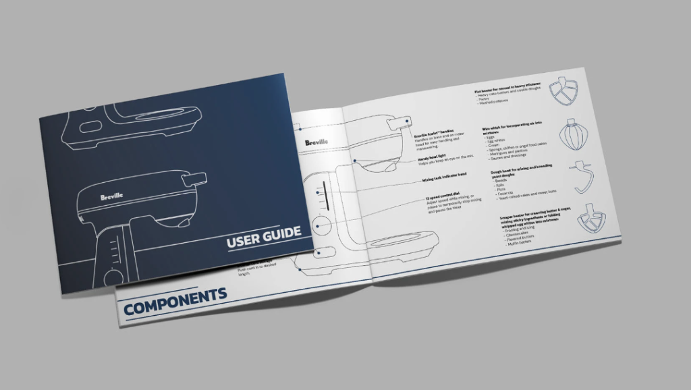
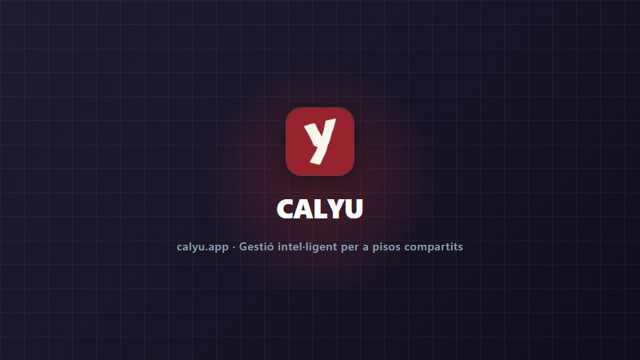

Enginyer amb doble titulació per la UPC, amb experiència en optimització de processos i metodologia Lean a Louis Vuitton, tècnic CAD a CELO i desenvolupament de projectes propis (CALYU). Amb caràcter emprenedor i visió de producte, treballo especialment bé per projectes, bolcant-m'hi al màxim quan m'apassiona el repte i hi crec fermament. Especialitzat en l'aplicació d'Intel·ligència Artificial per optimitzar processos, automatitzant fluxos i accelerant la velocitat d'iteració tècnica.

Ubicació: Terrassa (UPC ESEIAAT). Aprofundiment avançat en gestió integral de projectes industrials, càlcul estructural, optimització de plantes, sistemes energètics i integració tecnològica. Desenvolupament en curs del Treball de Fi de Màster (TFM).

Ubicació: Terrassa (Universitat Politècnica de Catalunya). Formació troncal completa de 4 anys (2020–2024) que fusiona enginyeria mecànica, modelat 3D CAD/CAM (SolidWorks), selecció de materials plàstics i metàl·lics, processos de manufactura, ergonomia, disseny per a fabricació (DFM) i prototipatge ràpid.



Ubicació: Vilafranca del Penedès. Control de procés, envasament automatitzat, verificació de qualitat en línia i paletització en una planta industrial d'alt ritme de fabricació continu.
Ubicació: Berga. Atenció directa al client, gestió àgil de reserves en recepció i coordinació de servei en torns de restaurant.
Competència comunicativa sòlida per a entorns professionals internacionals, documentació tècnica, redacció d'informes d'enginyeria i presentacions de projecte.

Concepció i model de negoci d'una plataforma de crowdshipping per aprofitar trajectes habituals en transport de paqueteria a mitjana distància mitjançant xarxa de punts de conveniència.

Disseny d'ulleres FPV per a pilots de drons. Treball d'ergonomia formal, estudi de particions complexes i renders d'alta fidelitat explorant textures i materials en components.

Redisseny estètic del robot de cuina i creació del manual tècnic d'instruccions d'ús, amb delineació esquemàtica i desglossament vectorial dels components i batedors.

Desenvolupament integral de producte i arquitectura UX per a la gestió de convivència en pisos compartits. Validat amb Lean Startup i incubat a Emprèn UPC.
Enginyeria de precisió, plànols i fabricació
Acceleració de codi i optimització de processos
Cultura Lean aplicada a planta i startup
Validació física i comunicació internacional